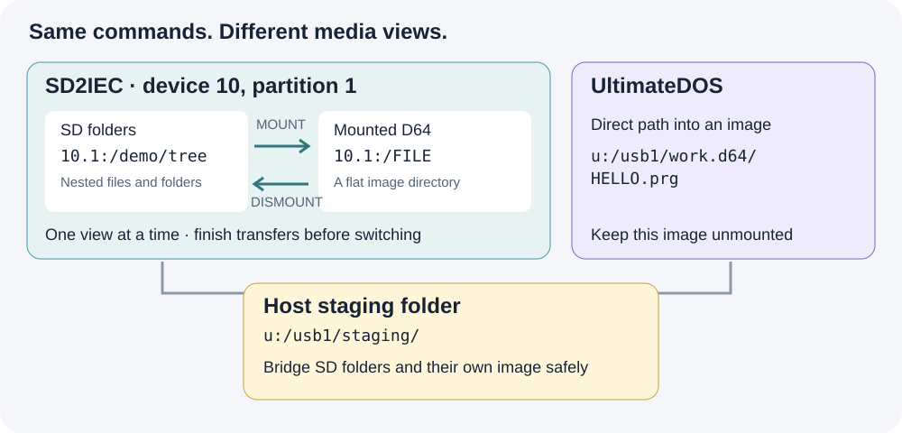
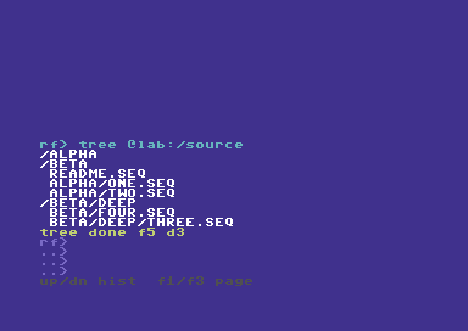
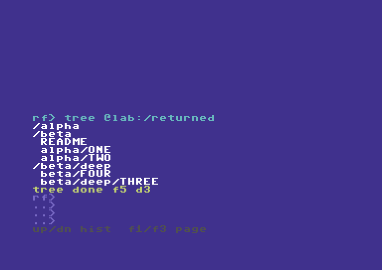
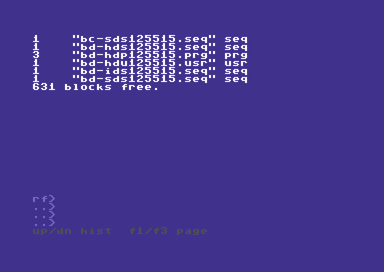
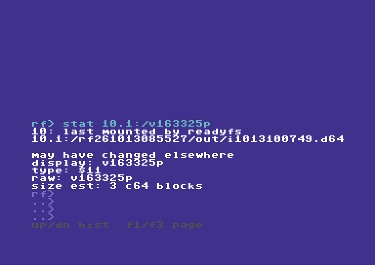

SD2IEC: folders, batches and disk-image contents
Updated 13 October 2026. Companion to the new physical SD2IEC walkthrough. The examples below use short, readable locations; the recording uses uniquely named, marker-checked test folders. Substitute folders and images you own, with unused destination names.
This guide is about the native SD2IEC device, addressed with paths such as 10.1:/. Ultimate SoftwareIEC has its own separate guide; the SoftwareIEC material below is explicitly about transfers between the two systems.
The short answer
Yes, you can copy more than one file, preserve nested SD folders, and work on files inside an image stored on SD2IEC. The important difference is how you enter the image:
- SD2IEC folders:
10.1:/demo/tree/alpha/oneis a native path on device 10, partition 1. UseCOPY … --recursivefor a whole supported folder tree. - SD2IEC image contents: first
MOUNT 10.1:/demo/work.d64 --force, then use10.1:/FILE. Mounting changes what partition 1 exposes. UseDISMOUNT 10.1:/ --forceto return to SD folders. - UltimateDOS image contents:
u:/usb1/work.d64/FILE.prgaccesses an entry inside an unmounted host image directly. It does not change SD2IEC's media view.
Automatic native paths such as 10.1:/demo/work.d64/FILE or 10.1:/demo/work.d64!/FILE are not implemented. An alias cannot add that capability. Image-listing mode dirs or both changes the directory presentation; it does not make automatic traversal work on the tested SD2IEC firmware.

SD mount/unmount is an explicit media transition. Keep the intermediate host folder accessible while the SD partition changes views.
1. Inspect the device and choose your roots
PROBE IEC 10:
IEC 10: CONFIG
IEC 10: PARTITIONS
IEC 10: PARTITION 1
ALIAS LAB u:/usb1/mydemo
ALIAS CARD 10.1:/mydemo
More than one partition on the same device
10.1: means device 10, partition 1. The .1 is not another device number or an image slot. ReadyFS can also address 10.2:/games for partition 2, or another existing native partition on that same device. The examples use partition 1 because that is the recorded setup, not because ReadyFS is limited to it.
Run IEC 10: PARTITIONS to see what the device offers. If partition 2 exists, IEC 10: PARTITION 2 inspects it and DIR 10.2:/ lists its root. These queries do not change the current selection. Explicit paths qualify their own operation; 10:/ instead uses the device's current partition, which ReadyFS queries and pins for that operation. IEC 10: PARTITION 2 --SELECT deliberately changes the current selection; it is not needed before an explicit 10.2:/... path.
Partition arguments and path suffixes are decimal, while $-prefixed numbers in the listing are hexadecimal. Available partitions depend on the card, device and firmware; naming one does not create it. An alias such as ALIAS ARCHIVE 10.2:/backups can bookmark a folder on an existing second partition. See the native partition reference.
The media type is a separate question. A G-P type of FAT OR DNP is ambiguous between those two hierarchical formats; type $02 identifies the D64 view used in the recording. Mounting an image changes the view of its selected partition, and mount/unmount may close buffers on other partitions of that device too. Finish open transfers before changing media.
Create the example roots separately before using these aliases. CONFIG is an inspection command. ReadyFS does not change extension modes just because you probe or copy. save-config explicitly saves firmware-supported extended settings together, including the address; it does not save your folder or mounted image. See the configuration reference.
2. Copy a whole nested folder to SD2IEC
Assume @lab:/source contains this tree:
source/
readme.seq
alpha/
one.seq
two.seq
beta/
four.seq
deep/
three.seq
TREE @lab:/source
MKDIR @card:/tree
COPY @lab:/source @card:/tree --recursive --whatif
COPY @lab:/source @card:/tree --recursive
TREE @card:/tree
The destination is an existing container. This copies the contents under tree, preserving the relative folder layout; it does not insert an extra source directory. -R is the short form of --recursive, and -W previews the plan. Ordinary path arguments do not expand shell wildcards: use the recursive selector and its --include / --exclude options when filtering.
The preview lists selected entries without writing. Actual COPY verifies each destination by default. Read the final FAIL 0 as well as the individual completions; the batch count includes directory actions, so it is not necessarily the number of files. A failed batch can leave completed earlier files in place; it is not an all-or-nothing transaction.

The source includes three subdirectories and five files. The recorded workflow keeps the original source intact.

One COPY command handles the tree. The walkthrough separately verifies every native destination against its source.
Why some names lose .seq
Ultimate host names and CBM logical names are different. In the tested SD extension configuration, one.seq is exposed on SD as the logical SEQ name ONE. ReadyFS preserves the file type; this is not data loss. Inspect DIR, STAT and IEC 10: CONFIG instead of guessing an outer FAT filename from the logical name. Native components are limited to 16 bytes in this implementation.
3. Copy the tree back, or move an owned copy
MKDIR @lab:/returned
CP @card:/tree @lab:/returned -R
TREE @lab:/returned
COMPARE @card:/tree/alpha/one @lab:/returned/alpha/one
The returned host tree uses the names enumerated by the SD directory. In this configuration those logical names omit the .seq suffix. The recording independently checks all five returned files, not just the example COMPARE above.

The return copy exercises SD directory traversal and host directory creation, then checks the resulting bytes independently.
MOVE uses the same selector but removes each source after its successful verified copy. For a disposable SD copy, prepare the destination first:
MKDIR @card:/moved
MOVE @card:/tree @card:/moved -R -W
MOVE @card:/tree @card:/moved -R
This recipe changes the tree used above; run it only when finished with the copy examples. A partially completed MOVE is not a rollback transaction. The earlier hardware acceptance covers this recursive move and nested cleanup; the new recording concentrates on copying and image boundaries.
4. Copy several files to other IEC endpoints
A mounted D64/D71/D81 is flat. A nested SD tree does not acquire a valid flat destination layout automatically. Choose the files and give them distinct short names:
COPY @card:/tree/alpha/one 9:/DEMO-ONE
COPY @card:/tree/alpha/two 9:/DEMO-TWO
Use your own mounted test image on device 9. The recording uses an owned image, not the user's existing mounted disk. Both entries are independently extracted after unmounting and checked for bytes and SEQ type.
Interoperability: native SD2IEC and SoftwareIEC
SoftwareIEC is a distinct Ultimate backend, addressed with s0:/...; SD2IEC retains its native 10.1:/... paths. For SoftwareIEC setup and standalone use, see its own guide. For this cross-backend transfer, first identify its logical partition and mapping. s0: is not IEC device 0. If its root exposes /USB1, and the destination folder already exists:
ALIAS SOFT s0:/mydemo
CP @card:/tree/alpha/one @soft:/DEMO-ONE
CP @card:/tree/alpha/two @soft:/DEMO-TWO
SoftwareIEC filename translation and folder operations depend on its firmware and mapping. The recording verifies these two files independently. It does not claim that recursive trees work on every SoftwareIEC implementation.
To bring those file sets back, choose unused SD destination names:
COPY 9:/DEMO-ONE @card:/from9-one
COPY 9:/DEMO-TWO @card:/from9-two
CP @soft:/DEMO-ONE @card:/froms-one
CP @soft:/DEMO-TWO @card:/froms-two
These reverse recipes use the same ordinary file operations verified by the full four-endpoint acceptance matrix. The new video shows representative selected-file transfers plus the complete nested-folder round trip. Use COMPARE to check any returned file against its retained source.
For a repeatable multi-file job, the same explicit COPY commands can go in a ReadyFS text script with ONERROR STOP, executed using RUN @lab:/COPYSET.SEQ. RUN script-path [arg1 ... arg9] accepts up to nine arguments, available as %1–%9 inside the commands. Named variables and local label subroutines are also supported; external-file CALL and nested RUN are not. See the RUN guide for the parameterized BACKUP.SEQ example and the complete batch reference. Inspect the individual results as well as the final result code. This is a scripting recipe, separate from the newly recorded interactive examples.
5. Work inside an image stored on SD2IEC
MOUNT 10.1:/mydemo/work.d64 --force
IEC 10: PARTITION 1
DIR 10.1:/
COPY @lab:/returned/alpha/one 10.1:/DEMO-ONE
COPY @lab:/returned/alpha/two 10.1:/DEMO-TWO
COPY 10.1:/DEMO-ONE @lab:/image-one.seq
DISMOUNT 10.1:/ --force
The example assumes work.d64 already exists as a valid mountable image. Copying an entire image file onto SD is a separate operation: some SD extension modes create X00 wrappers. A logical byte comparison alone does not prove that such a host file can be mounted. Use the explicit raw-image procedure in the native support reference, including restoration of the previous extension mode and hiding flag.
While the image is mounted, 10.1:/ is its directory. The earlier SD FAT path 10.1:/mydemo/tree/... is no longer the same accessible view. This is why the example reads from the host return copy rather than simultaneously reading an SD FAT folder.
The implementation supports ordinary COPY, COMPARE, MOVE, same-filesystem RENAME and DELETE for supported files inside the mounted image. SEQ, PRG and USR are supported byte streams; REL is not. Use explicit filenames and preserve file types. A normal flat disk image does not support arbitrary nested folders.

DIR operates inside the mounted SD image. The mount hint is session information, not a guarantee against changes made by another program.
6. Copy between SD image contents and an Ultimate image
Use a separate, writable Ultimate image that is not also mounted on an IEC drive:
MOUNT 10.1:/mydemo/work.d64 --force
COPY 10.1:/DEMO-ONE u:/usb1/other.d64/ONE.seq
COPY 10.1:/DEMO-TWO u:/usb1/other.d64/TWO.seq
COPY u:/usb1/other.d64/HELLO.prg 10.1:/DEMO-PRG
STAT 10.1:/DEMO-PRG
Here the SD side uses a mounted media view, while the Ultimate side uses direct slash paths. The destination filename must be explicit; a trailing slash does not yet mean “keep the source filename.” A typed suffix on an Ultimate-contained destination must agree with the source type. The physical typed contained-image matrix covered D64; mounted IEC tests also covered D81. This is not evidence for every image format or firmware combination.

STAT reports the native type as $11 (PRG). Independent byte checks and type checks answer different questions.
7. Move data between SD folders and an image on that same SD2IEC
Use host storage as an intermediate. Every command completes and closes its channels before the mount changes:
COPY 10.1:/DEMO-PRG @lab:/fromimg.prg
DISMOUNT 10.1:/ --force
COPY @lab:/fromimg.prg @card:/fromimg.prg
COMPARE @card:/fromimg.prg @lab:/fromimg.prg
For the opposite direction, copy the SD-folder files into an existing host staging folder first, mount the SD image, and copy the selected staging files into its root. A folder tree cannot be preserved inside a flat D64; explicitly choose names and avoid collisions. Keep the staging copy until verification finishes.
This uses the C64's native filesystem commands. The intermediate is storage reached by ReadyFS, not a Mac relay or runtime network service.
Boundaries at a glance
| Route | Multiple-file approach | Image or folder boundary |
|---|---|---|
| Ultimate host folders ↔ SD folders | Recursive COPY; nested five-file round trip recorded and independently checked | Prepare the destination container; 16-byte native components |
| SD folders → mounted IEC disk | Explicit chosen files, or a reviewed command script | Flat disk: no automatic flattening of a tree |
| SD folders → SoftwareIEC | Explicit chosen files in the verified mapping | Firmware/mapping-dependent; no blanket recursive guarantee |
| SD image contents ↔ Ultimate host or another IEC endpoint | Mount SD image, then ordinary file operations | Device path refers to the mounted image |
| SD image contents ↔ Ultimate image contents | Mounted SD paths on one side; ordinary Ultimate slash paths on the other | Ultimate image must be separate and unmounted |
| SD folders ↔ an image on the same SD device | Intermediate host files plus explicit mount/unmount | The partition cannot expose both views to one simultaneous stream |
10.1:/disk.d64/FILE or !/FILE |
Not automatic in this build | Mount explicitly first |
The native support reference and IEC configuration reference document firmware caveats. Existing test roots and images are retained as evidence. No user files were deleted to make the demonstrations.